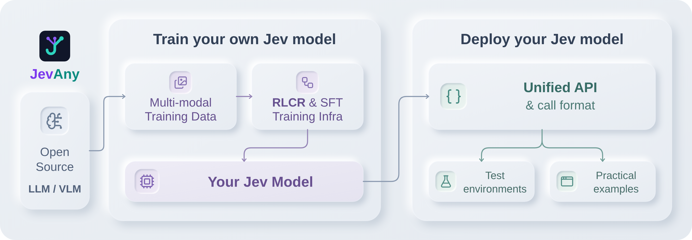

JEVANY / DOCUMENTATION
开始使用 JevAny
JevAny 是面向 System 1 决策模型训练与部署的开源 infra，涵盖数据准备、模型适配和评测。 你可以直接使用已发布模型，也可以用自己的数据训练，用于工单分流、工具选择和机器人动作决策。 统一 API 接收状态、问题和候选选项，直接返回选择结果与各选项概率。

🎮 结果与演示
Explore interactive benchmark results
以下 30 个案例是由早期兼容 checkpoint 录制的历史回放，展示了 JevAny 在机器人、浏览器、软件、实验室和出行任务中的动作选择； 当前默认发布模型为 JevAny-Qwen3.8-27B。查看全部案例， 或在本地运行模型，输入自己的任务，查看模型的选择和各选项概率。
Explore all 30 application replays →
⚡ Jev 加入 LLM Agent 循环
候选动作由环境提供或由 LLM 生成；Jev 做局部选择，规划、失败恢复和最终完成仍由 LLM 负责。 下方动图对比左侧纯 LLM 与右侧 LLM + Jev，两侧 reward 相同；步骤为示意， 加速播放保留各组记录的实测耗时比例，点击可放大查看。
快速判断原则
委托“选择瓶颈”，而不是委托整个任务。 Jev 只在一个窄区间有价值： LLM 已经知道有效选项，但让大模型逐次做局部选择成本高，或已经测出排序不稳定。
Jev 只有两种有效价值：减少 frontier 工作量，或修正已经测出的局部排序弱点。 两者都做不到时，Jev 就只是额外开销。
- 按阶段判断，不按 benchmark 名称判断。 WebShop 和 Terminal-Bench 都同时包含开放推理与有界选择。只委托后者；太简单的动作直接执行更便宜， 缺失的策略则继续交给 LLM。
- 候选决定能力上限。 给 Jev 2–4 个当前有效、包含正确动作且会导向 不同结果的反事实分支。Jev 能重排已有选项，不能发明缺失的计划。
- 追求效率时，要替代推理，不要追加裁判。 一次 LLM 计划应供多次 Jev 选择复用。在 GPT-5.6-sol + 27B 的 FrozenLake cell 中，LLM 调用减少 64.4%；WebArena 没有真正替代 frontier 工作，调用反而增加 5.6%， tokens 增加 28.2%。纯效果收益应先在配对实验或 D1 shadow 中验证排序改善。
- 只在反馈视界内委托。 仅当动作可回退、语义效果能立即验证时继续； 遇到新状态、候选失效、延迟反馈或失败恢复，立即交回 LLM。
- 用证据升级自治层级。 从 D0 纯 LLM → D1 shadow → D2 单步选择 → D3 常规决策默认委托 → D4 有界子任务逐级推进。只保留 Pareto 非劣点： reward 不降且成本更低，或 reward 提升但明确披露额外成本。委托比例高本身不是收益。
|
1. WebShop |
|
|
2. FrozenLake |
|
|
3. Terminal-Bench |
下表展示更多配对评测结果，收益随任务而变化。完整结果、 委托协议和 技术报告说明了 Jev 适合处理哪些选择，以及何时交回 LLM。
| 任务 | 成功率 | 效率 |
|---|---|---|
| FrozenLake（GPT-5.6-sol，10 组配对） | 100% → 100% | LLM 调用 −64.4%，tokens −63.1%，用时 −37.6% |
| WebShop（LLM 生成候选，3 组配对） | 67% → 100% | LLM 调用 −21.4%，tokens −14.3%，用时 −15.0% |
| WebArena（6 组配对） | 50% → 50% | LLM 调用 +5.6%，tokens +28.2%，用时 −0.4% |
| Terminal-Bench（6 组配对） | 1/6 → 3/6 | LLM 调用 −9.0% |
📑 目录
- 🎮 结果与演示
- ⚡ 1. 快速上手
- 💻 1.1 本地体验
- 🛠️ 1.2 JevAny 训练
- 🚀 1.3 JevAny 部署
- 🤗 2. 预训练模型
- 📊 3. 基准测试结果
- ⏱️ 3.1 推理效率
- 🕹️ 4. 示例与测试环境
- 🧩 5. 支持的模型系列
- 📚 6. 文档与贡献
⚡ 1. 快速上手
使用 Python 3.12 或更新版本，克隆仓库并安装轻量客户端：
git clone https://github.com/SimpleJev/JevAny.git
cd JevAny
python3.12 -m venv .venv
source .venv/bin/activate
python -m pip install -e .
以下命令均在仓库根目录运行，并使用上述虚拟环境。 先在本地体验，再用自己的数据训练模型，或通过 API 接入应用。
💻 1.1 本地体验
选择适合自己电脑的模型：
| 模型 | 硬件 | 从这里开始 |
|---|---|---|
| Qwen 0.8B 入门配置 | CPU · 建议 16 GB 内存 | 用随包工单训练小型 adapter |
| JevAny-Qwen 4B | CUDA · BF16 基座权重约 8 GB，另需运行时显存 | 加载已发布模型 |
| JevAny-Qwen 27B | CUDA · BF16 基座权重约 54 GB，另需运行时显存 | 选择更大的 checkpoint |
准备和加载步骤见本地模型指南。已发布模型首次使用时下载， 之后复用本地缓存。保持模型服务运行，在同一仓库目录打开第二个终端：
source .venv/bin/activate
jevany demo --base-url http://127.0.0.1:8008 --text-only
打开 http://127.0.0.1:8090，点击 Test and connect，在
Try your own decision 中输入任务，点击 Ask the model。
修改状态或候选选项，观察模型的选择如何变化。
同一界面还提供游戏、机器人和回放。
🛠️ 1.2 JevAny 训练
用标注决策数据训练自己的 System 1 模型：数据沿用推理时的 state 和 questions，
为每个问题增加标签。
先用随包提供的合成客服工单开始训练，再换成自己的标注数据。入门配置在 CUDA 上
以 BF16 训练 Qwen3.5-0.8B，结果写入 runs/my-jev：
python -m pip install -e '.[train]'
jevany data init --out data/starter
jevany data validate data/starter/train.jsonl
jevany train --config recipes/sft.toml --dry-run
jevany train --config recipes/sft.toml
训练完成后，用随包提供的工单请求试用模型：
jevany decide examples/request.json --checkpoint runs/my-jev
通过 --data 指定自己的 JSONL 数据，或用
recipes/finetune.toml 微调已发布的 27B 模型。
CPU 配置、多模态数据和标准 torchrun 启动方式见训练指南。
训练图片/视频模型或微调已发布的 27B 模型时，安装 .[train,multimodal]。
完成 SFT 后，可用实验性的 RLCR 继续训练，其奖励兼顾正确率与概率校准：
jevany train --config recipes/rlcr.toml
🚀 1.3 JevAny 部署
安装推理依赖，在 CUDA GPU 上启动已发布的 Qwen 4B 模型。 显存要求见硬件与加载说明。
python -m pip install -e '.[serve,multimodal]'
jevany serve --checkpoint SimpleJev/JevAny-Qwen3.5-4B-LoRA \
--device cuda --dtype bf16 --port 8008
默认路径优先保证结果可复现。CUDA 部署可选择 BF16 LoRA 融合、SDPA 和
torch.compile，4B 与 27B 的推荐配置不同。具体命令、H200 实测数据和精度说明见
推理加速指南。
部署自己的训练结果时，将 checkpoint ID 替换为 runs/my-jev。
保持服务运行，在使用相同虚拟环境的 Python 会话中，发送工单和候选处理部门：
from jevany import Choice, JevClient
jev = JevClient("http://127.0.0.1:8008")
result = jev.system_one(
state={"ticket": "I was charged twice. Please help."},
questions={
"department": Choice(
instructions="Which team should handle this?",
criteria={"billing": "Payment problems", "shipping": "Delivery problems"},
),
},
)
answer = result["answers"]["department"]
print("Selected team:", answer["choice"])
print("Probabilities:", answer["probabilities"])
choice 返回一个候选部门名称，probabilities 返回各部门的概率。
你可以据此分配工单，也可以在结果不确定时转交人工审核。
二分类问题使用 Noul，例如判断工单是否需要紧急处理；有序评分使用 Score，
例如低、普通、高三个优先级。三类问题的完整格式见 API 文档。
进程内推理可以在 Python 中加载模型，通过相同接口调用。 图片和视频输入见媒体配置。
🤗 2. 预训练模型
第一次在本地运行，可以先按本地体验中的硬件要求选择模型。
| 模型 | Readout | 用途 |
|---|---|---|
| JevAny-Gemma-4B | Pointer | 轻量 Gemma 版本 |
| JevAny-Qwen3.5-4B | Pointer | 轻量、支持灵活选项数 |
| JevAny-Qwen3.5-4B-Direct-Token | Direct-token | 当前 4B JevBench 最优版本 |
| JevAny-Qwen3.8-27B | Pointer | 默认模型；当前发布准确率最高 |
| JevAny-Muse-Glimmer-30B | Pointer | Muse Glimmer 版本 |
这些 LoRA adapter 采用 SFT 训练，训练数据包含 1,772,725 条文本记录和 2,180,242 个有标签决策， 配置见训练算力与实验说明。 全参数 SFT 与进一步的后训练改进仍在计划中。
加载时还需要对应基座，并适用基座模型的许可证和访问条款。BF16 基座权重大约 需要参数量两倍的字节数，另需运行时显存。详见硬件与加载说明。
Pointer 和 direct-token 模型使用相同 API。Pointer 在上下文允许的范围内支持最多 4,096 个选项，direct-token 最多支持 255 个。 训练与准确率的取舍见输出方式说明。
📊 3. 基准测试结果
JevAny-Qwen3.8-27B 在两项评测中准确率最高，NLL 和 Brier 也最低。 4B 版本中，direct-token 的 JevBench 准确率最高，Pointer 的 Transfer 准确率最高。
Explore interactive benchmark results
完整结果与评测协议 · 机器可读结果 · 方法与消融实验报告
外部对比覆盖完整 Typed Decisions、JevJudge 3,220 条多模态全集及其 724 条
文本切片。13 个模型在三个面板中保持同一顺序；— 表示不支持原生输入或
没有对应结果。

- JevAny-Qwen3.8-27B：Typed 准确率 72.8%，JevJudge 全集准确率 62.3%，JevJudge 纯文本准确率 66.4%。
- 五个 JevAny 版本都完成了 3,220/3,220 条原生文本、图片和视频评测，全集准确率为 51.5%–62.3%；最强完整开源 baseline 为 48.2%。
- JevJudge 纯文本子集中，Qwen3.8-27B 为 66.4%，Kev-27B 为 64.2%。Kev 没有原生图片/视频路径，因此全集为
—。 - 公开报告的 TypeSafe Jev 1.13.0 在 Typed Decisions 上为 72.7%，比 Qwen3.8-27B 低 0.1 个百分点。Decider 1（76.8%）和 Liquid d1（74.2%）仍更高；三者都没有对应的 JevJudge 结果。
三个面板现在统一使用准确率。JevJudge 全集包含全部 3,220 条多模态记录，
纯文本面板是其中 724 条记录的子集；官方 skill_role 只保留在详细评测说明中。
⏱️ 3.1 推理效率
在单张 H200 上，CUDA Graph 将 Qwen3.8-27B 的中位延迟从 113.54 ms 降至 30.53 ms（3.72×）；融合 SDPA 加 CUDA Graph 将 Muse-Glimmer-30B 从 100.71 ms 降至 43.25 ms（2.33×）。 两次测量均未改变 argmax。下表对 27B 与 30B 使用 H200 headline 实测， 对 4B 保留原有的同硬件 A100-40GB 对照。图中的菱形是 27B/30B 的 H200 加速箭头，圆点是 A100 对照；H200 点不参与 A100 frontier。延迟仅可在 同一行内比较。
| 模型 | 硬件 | 加速前 | 加速后 | 加速比 | 准确率检查 | 固定面板 |
|---|---|---|---|---|---|---|
| JevAny-Qwen3.5-4B | A100 | 104.6 ms | 25.3 ms | 4.1× | 78.68% → 78.87% | Transfer，1,046 |
| JevAny-Qwen3.5-4B-Direct-Token | A100 | 106.4 ms | 25.9 ms | 4.1× | 78.11% → 78.39% | Transfer，1,046 |
| JevAny-Gemma-4B | A100 | 106.3 ms | 31.9 ms | 3.3× | 70.84% → 70.84% | Transfer，1,046 |
| JevAny-Muse-Glimmer-30B | H200 | 100.71 ms | 43.25 ms | 2.33× | 38/44 → 38/44 | Transfer 样本，44 |
| JevAny-Qwen3.8-27B | H200 | 113.54 ms | 30.53 ms | 3.72× | 207/231 → 207/231 | JevBench public，231 |
中位模型调用延迟，串行 batch size 1。完整报告保留同硬件 A100 对照与面板限制。
单张 A100-40GB 上的 4B 版本，Transfer-v9。每根进度条以真实时间的 1/20 增长，停在该阶段的中位延迟处。
完整表格、实验设置与其他模型 · 开启方法 · H200 机器可读结果 · A100 机器可读结果
🕹️ 4. 示例与测试环境
交互演示包含以下三个环境。动图保留历史模型的动作和选项概率；当前 JevAny-Qwen3.8-27B 可按 playground 指南中的命令运行。
🤖 4.1 机械臂插孔
控制 Franka 夹爪抓取、对准并插入工件，由 PyBullet 接触物理验证结果。
🔫 4.2 Doom 走廊 · 3D
击败最后一个房间中左右两侧的敌人，再向前移动。使用 ViZDoom 和随包提供的 Freedoom 资源。
⛏️ 4.3 Crafter 生存建造 · 2D
采集木材、制作工具、开采石头，同时管理生命值和物资。
🎮 4.4 打开交互演示
按本地体验启动模型后，打开交互演示：
jevany demo --base-url http://127.0.0.1:8008 --text-only
打开 http://127.0.0.1:8090，点击 Test and connect，尝试自己的决策任务。
要让模型操作游戏，安装可选引擎并重新启动演示：
python -m pip install -e '.[demo]'
jevany demo --base-url http://127.0.0.1:8008 --text-only
在浏览器中选择 Run model，再点击 One decision 单步运行，或
Run automatically 连续运行。选择 Play yourself 可以自己操作。
实时控制向模型发送文本状态；机械臂控制使用 .[robotics] 依赖。
观看内置录制内容时，运行 jevany demo 并选择 Replay，只需 CPU，无需模型权重。
平台要求与环境接口见演示指南，结合 LLM 规划器使用
JevAny 决策可参考集成文档。
🧩 5. 支持的模型系列
📚 6. 文档与贡献
训练 · 部署 · API · 数据 · 评测 · Agent harness 协议 · 贡献指南
欢迎贡献模型适配、评测或应用示例，开发步骤见贡献指南。 技术报告介绍了模型设计、多模态路径、 agent-harness 实验与附录、负面结果和开放问题。
代码和入门数据采用 Apache-2.0。部分组件改编自 Kev， 归属说明见 NOTICE 和 ACKNOWLEDGEMENTS.md。 基座模型与上游数据集保留各自条款。